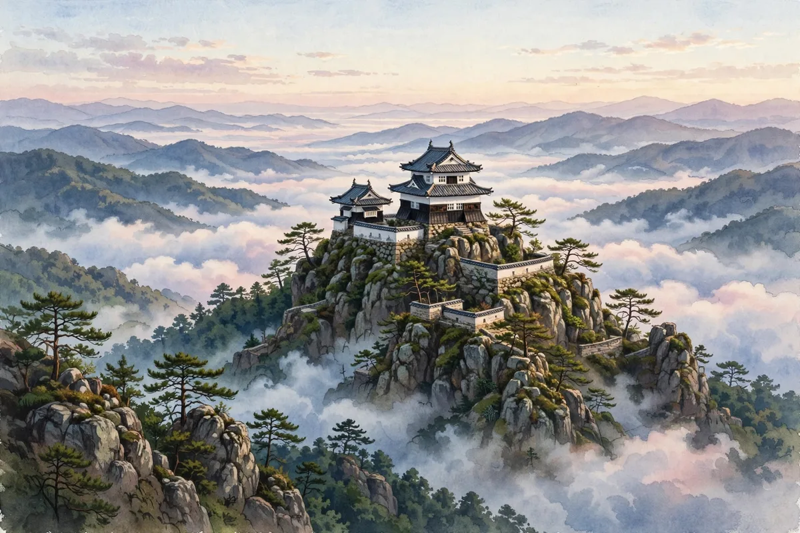

Bitchu-Matsuyama Castle Floats on a Sea of Clouds — The 'Castle in the Sky' in Late Autumn

This is a news article bringing you the latest developments concerning castles and shrines. Source: the Asahi Shimbun (November 17, 2026) and FNN Prime Online (November 17, 2026, via Okayama Broadcasting). Bitchu-Matsuyama Castle in Takahashi City, Okayama Prefecture, one of Japan's Three Great Mountain Castles, has entered the sea-of-clouds season as the temperature gap between day and night grows in late autumn. On November 17, a sea of clouds formed before dawn near the observation deck, and the castle appeared and disappeared in the mist, creating the fantastical scenery that has earned it the name 'castle in the sky.'
【When the Sea of Clouds Appears: Cold, Clear Early Mornings with a Big Temperature Gap】According to the Takahashi City Tourism Division, the sea of clouds is most likely to appear from dawn to around 8 a.m. on clear mornings when the previous day was warm and the temperature gap is large. On the morning of November 17, the lowest temperature in Takahashi City was 8.1 degrees Celsius, and the sea of clouds spread across the whole area. The sea of clouds is expected to occur readily until early December. The 'Bitchu-Matsuyama Castle Sea of Clouds Observation Deck,' from which the castle floating on the clouds can be seen, stands on a separate mountain top to the east of the keep. Before setting out, you can check the state of the clouds with Okayama University of Science's 'Sea of Clouds AI Forecast' (the probability of appearance for the next day) and the live stream from the observation deck.
【The Only Mountain Castle Whose Keep Survives】Bitchu-Matsuyama Castle is a mountain castle built on Mount Gagyu, about 430 meters above sea level, and is known as the only mountain castle whose keep still survives. The keep is an Important Cultural Property and one of the twelve surviving keeps. Stone walls were built on the natural rock of the mountaintop, and the keep, a two-story turret, and other surviving structures stand upon them. From October to March, the castle is open from 9:00 to 16:30 (last entry 16:00), and admission is 500 yen for adults and 200 yen for elementary and junior high school students. The castle is closed from December 29 to January 3. From mid- to late November, the keep and stone walls are surrounded by trees turning vivid red and gold, a time when the sea of clouds and autumn leaves can be enjoyed together.
【For Exam Study】For exam study, the key point is that Bitchu-Matsuyama Castle is 'the only mountain castle whose keep survives' and one of Japan's Three Great Mountain Castles. Of the twelve surviving keeps, Bitchu-Matsuyama is the only one on a mountain castle. The sea of clouds is best from late September to early April, and early mornings from late October to early December are especially promising. See also the related article 'Castles with Cherry Blossoms and Autumn Colors: Enjoying How the Keep Changes with the Seasons.'
When visiting Bitchu-Matsuyama Castle, please check the state of the sea of clouds and opening hours in the official guidance of Takahashi City. The observation deck and the keep are on different routes, so the recommended order is to visit the observation deck early in the morning and then head to the keep after it opens at 9:00. This site's event calendar also lists winter castle illuminations such as 'Hiroshima Castle Evening Stroll 2026,' which begins on December 18.
A word from Tsurugi: A keep floating on a sea of clouds — truly a 'castle in the sky.' Your chance lasts until early December. Get up early and take in the view from the observation deck.
We also share castle and shrine news and exam updates on our official social media. Follow @tabi.kentei.jp on Instagram and Threads to keep up with the latest information.
Related article:Castles with Cherry Blossoms and Autumn Colors: Enjoying How the Keep Changes with the Seasons
Recommended books for this article
Castle Guide
Samurai Castles: History / Architecture / Visitors' Guides
Hundreds of color photographs and close-up detail on Japan's most important surviving samurai castles — their history, design and military features, with guidance for visitors. The best single companion for castle sightseeing.
View at Barnes & NobleCheck the price at Barnes & Noble
Travel Guide
Lonely Planet Japan (Travel Guide), 19th Edition
Author: Lonely Planet
The standard Japan travel guide in its 19th edition — trip planning, itineraries, transport and on-the-ground detail. The practical backbone for a castle-and-shrine trip.
View at TargetCheck the price at Target
Book links on this page go to the retailers' product pages. Prices and availability are shown on the retailer's page.